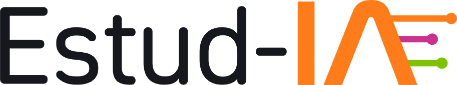

Análisis de datos · Nivel básico
Slides del curso
Todo en un solo lugar, organizado por semanas. Cada semana trae sus dos encuentros y el módulo de Platzi que la acompaña. Las slides aparecen aquí a medida que avanza el curso.
Antes de empezar
Se consulta una vez, antes del encuentro 1
-
Curso
Abrir slides
Presentación del curso
Qué vamos a hacer, cómo se organiza el programa, el marco de trabajo, los acuerdos y cómo usaremos la app.
-
Prework
Instalación de herramientas
Terminal, Python, VS Code, Git y tu cuenta de GitHub, paso a paso, con una lista para verificar. Al final, Docker y Airflow, solo para nivel intermedio y opcionales si eres de básico.
Semana 1
Platzi M1 · SQL para análisis de negocio
Esta semana- Encuentro 1Disponible pronto
Comunidad, pacto y oportunidades analíticas
-
Opcional · si lo necesitas
Abrir slides
Clínica de Git
Repaso de 30 minutos: commits, ramas, pull requests y conflictos, con una hoja de comandos.
-
Encuentro 2
Disponible pronto
Delimitación de proyectos, fuentes y criterios de calidad
Semana 2
Platzi M2 · Transformaciones avanzadas con pandas
- Encuentro 3Disponible pronto
Consultas SQL y relaciones que conservan el significado
- Encuentro 4Disponible pronto
Preparación reproducible y decisiones sobre calidad
Semana 3
Platzi M3 · Visualización avanzada: Power BI y Tableau
- Encuentro 5Disponible pronto
Indicadores descriptivos y comprobación de resultados
- Encuentro 6Disponible pronto
Diseño de un tablero para el usuario del proyecto
Semana 4
Platzi M4 · Estadística descriptiva aplicada a negocio
- Encuentro 7Disponible pronto
Clínicas de profundización y coherencia entre herramientas
- Encuentro 8Disponible pronto
Interpretación, recomendaciones y límites de cada proyecto
Semana 5
Platzi M5 · Documentación y portafolio analítico
- Encuentro 9Disponible pronto
Reproducibilidad, documentación y preparación del portafolio
- Encuentro 10Disponible pronto
Demostración, defensa y proyección del trabajo
Cómo moverte por las slides
- → o clic: siguiente paso
- ←: paso anterior
- F: pantalla completa
- S: mostrar todo de una vez
Opera: Corpogem · Apoya: Nodo y Universidad EAFIT · Organiza: Alcaldía de Medellín